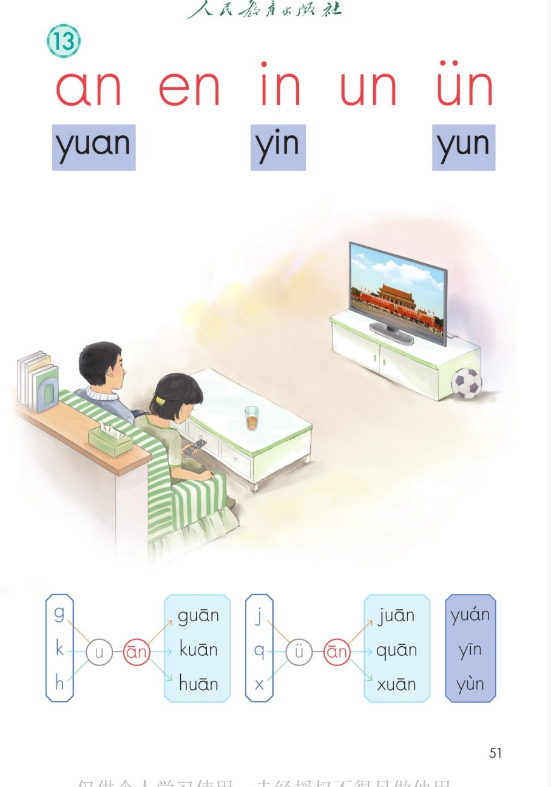
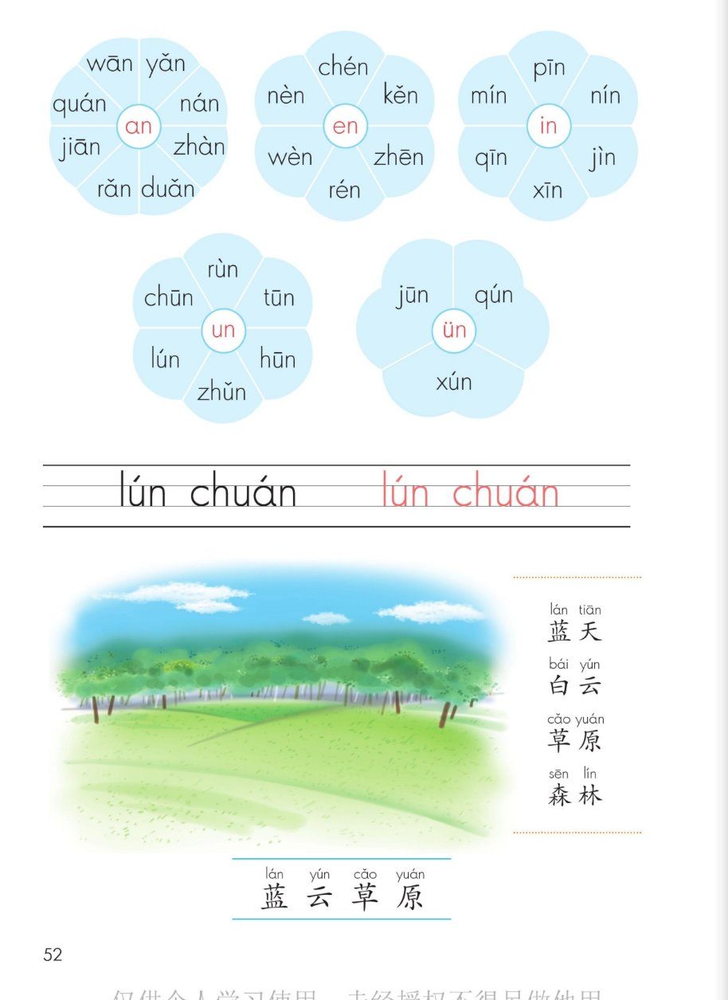
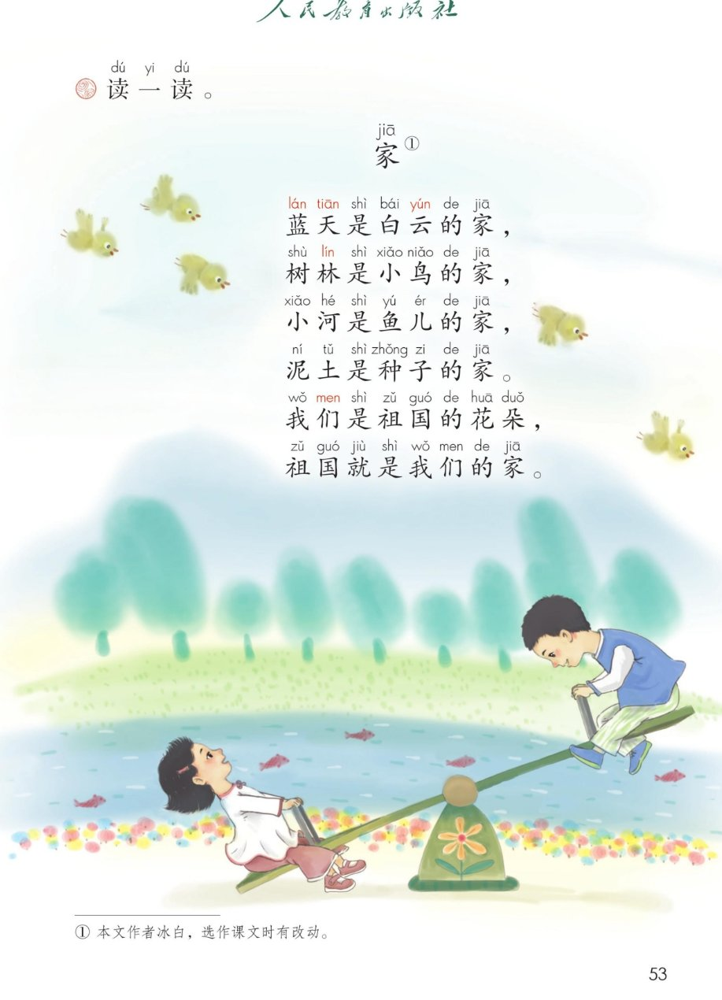

×
🔊 手机听不到声音怎么办？
① 先把手机
媒体音量调大 ，确认没开静音、没连蓝牙耳机；在微信里打开的，点右上角「⋯ → 用浏览器打开」。
② 还是没声音？到应用商店免费下载
Microsoft Edge 浏览器 （它自带朗读发声），用它打开本页面就能出声。
③ 换了 Edge 仍然没声音，说明这部手机的
硬件/系统不支持 网页朗读（多为老旧机型）；近几年买的新手机一般都能正常播放。
→ 打开声音自检
统编版 · 一年级上册 · 第四单元 · 汉语拼音 13
拼音 13 · an en in un ün
五个前鼻韵母 + 三个整体认读音节 yuan、yin、yun前鼻音 n 和三拼 guān、juān ，读儿歌《家》
认前鼻韵母 整体认读 三拼 guān juān 拼音花 5 朵 家 闯关 8 题
这一课学什么： 认识五个前鼻韵母 an、en、in、un、ün——读的时候舌尖顶住上牙床，鼻子出气；
学会整体认读音节 yuan、yin、yun；练三拼音节 guān、juān；写 lún chuán；读词语「蓝天、白云、
草原、森林」和儿歌《家》。发音方法以课本和老师教的为准。
课本第 51 页 点卡片听发音要点
前鼻音小口诀： 舌尖顶住上牙床，鼻音 n 跟在后——an、en、in、un、ün，五兄弟都是前鼻韵母 。👃
课本第 51 页 整体记，一口读出来，不用拼
yu +
an →
yuan
yuan：圆圆的圆、公园的园
💡 yuan 是整体认读音节，写成 y + uan，读起来像「圆」——不用拼，整体记住就好。
yin
·
yun
yin：音乐的音 yun：白云的云
💡 in 自己成音节写成 yin ，ün 自己成音节写成 yun （ü 的两点省去，还念 ün）——和拼音 9 的 yi、yu，拼音 12 的 ye、yue 是一家子！⭐
整体认读音节： yuan、yin、yun 要整体记，不用拼，一口读出来 。⭐
课本第 51 页 复习口诀：声轻、介快、韵母响
g·k·h —
u —
ān →
guān kuān huān
guān：关门的关 kuān：宽宽的宽 huān：欢呼的欢
💡 声母 g、k、h ，介母 u ，韵母 ān ——三音相连猛一碰，别忘了中间的 u！
j·q·x —
ü —
ān →
juān quān xuān
juān：杜鹃花的鹃 quān：圆圈的圈 xuān：跟着读一读
💡 j、q、x 碰见 ü ，两点省去 ——所以写的是 juan、quan、xuan，中间那个 u 其实还念 ü！
课本第 52 页 点花心读韵母，点花瓣读音节
玩法： 五朵花的花心就是五个前鼻韵母 ——先读准花心，再摘花瓣。🌸
课本第 52 页四线格 先看写法，再照着描红
写法提示： lún 的声调标在 u 上；chuán 是三拼音节 （ch—u—án），声调标在 a 上。✏️
课本第 52 页 点词卡跟读
识字条 · 连起来读
蓝 · 云 · 草 · 原 —— 把识字条上的字连起来读一读、记一记。
💡 「草原」的「原」是整体认读音节 yuan ；「森林」的「林」韵母是前鼻音 in ——舌尖顶住上牙床读。
课本第 53 页 点一行读一行
家jiā ①
蓝lán 天tiān 是白bái 云yún 的家jiā ，
树林lín 是小鸟niǎo 的家jiā ，
小河hé 是鱼yú 儿ér 的家jiā ，
泥土tǔ 是种zhǒng 子zi 的家jiā 。
我们men 是祖zǔ 国guó 的花huā 朵duǒ ，
祖zǔ 国guó 就是我wǒ 们men 的家jiā 。
① 本文作者冰白，选作课文时有改动。
🎵 全首连读
想一想，说一说： 蓝天是白云的家，树林是小鸟的家……你也来编一句「什么是谁的家 」，看谁编得妙。🏡
点题目可以听题，点选项就判对错，答完自动算分
已经答 0 题，答对 0 题。
点图放大

第 51 页 · an en in un ün · yuan yin yun · 三拼演示

第 52 页 · 拼音花 5 朵 · 四线格 · 蓝天白云草原森林

第 53 页 · 儿歌《家》· 识字条 蓝云草原